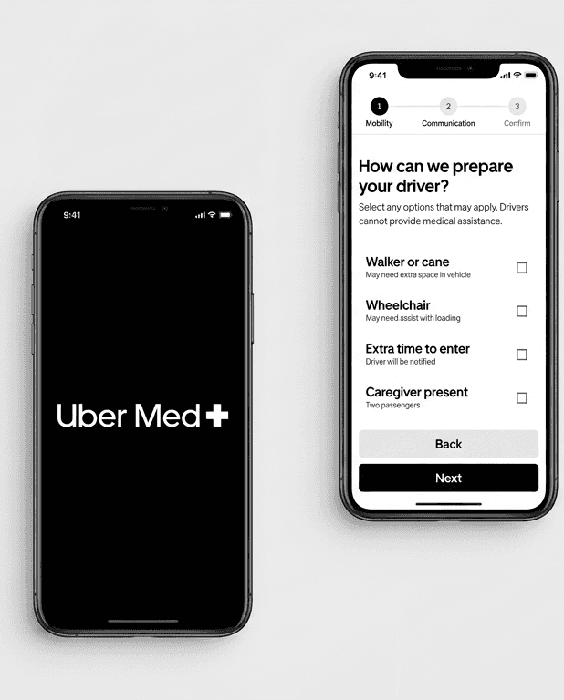
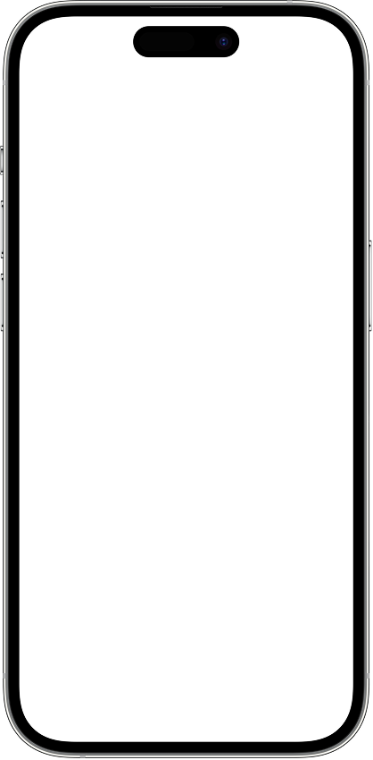
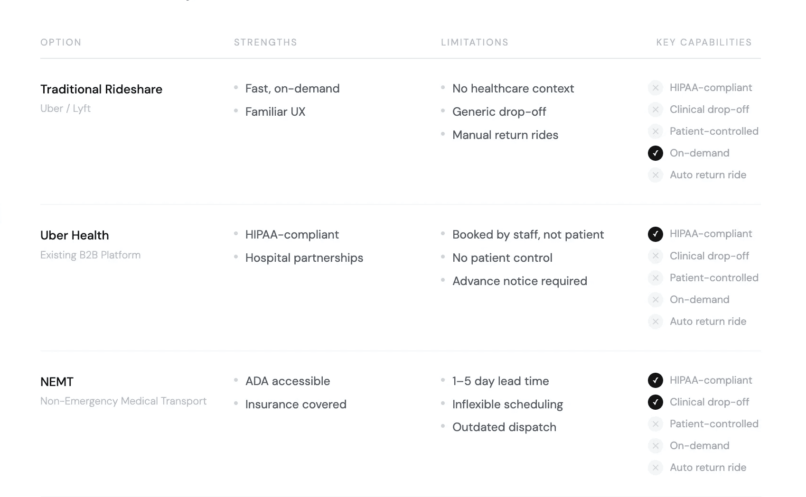
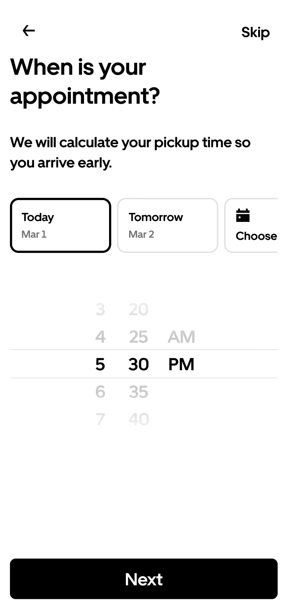
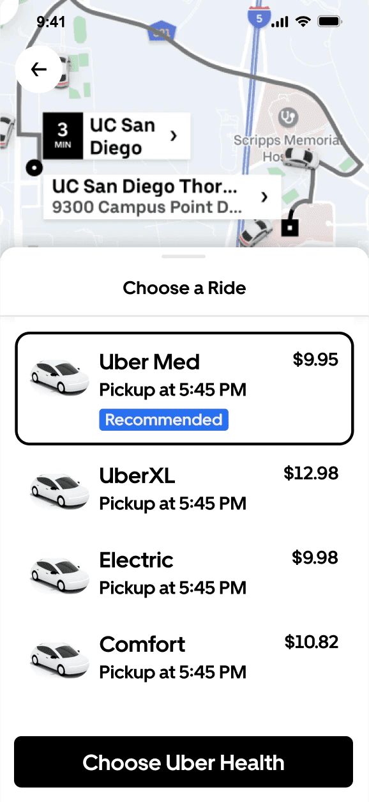
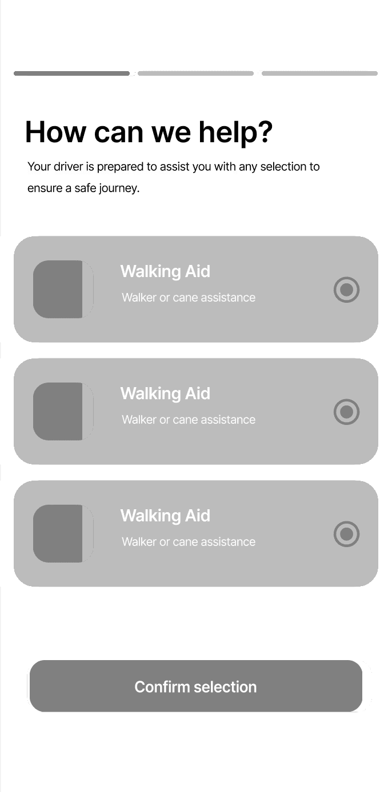
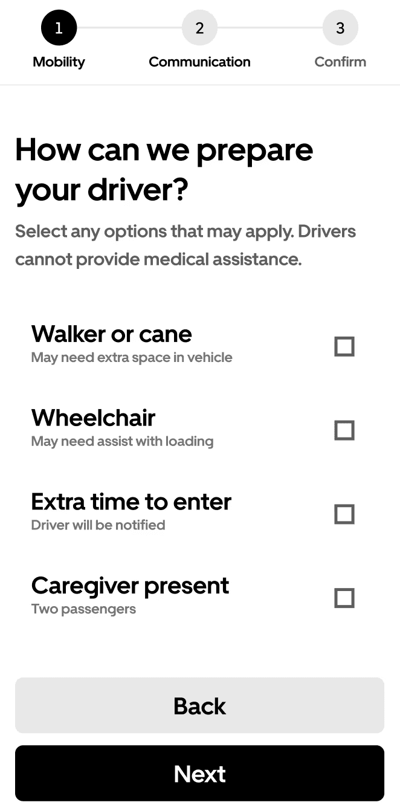
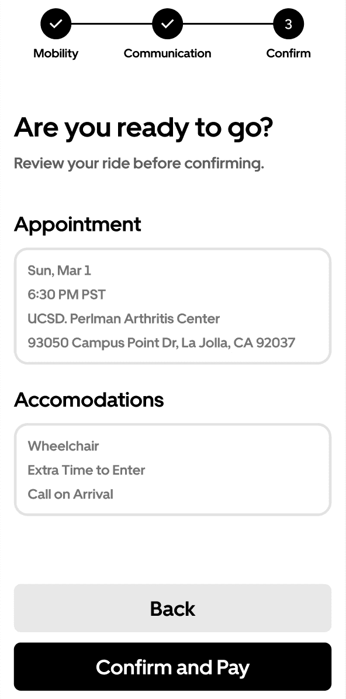

Uber Med
Reducing missed medical appointments by integrating
healthcare scheduling with reliable transportation.

- Role
- Product Designer
- Team
- Just me!
- Tools
- Figma
- Timeline
- Jan – March 2026
The Problem
For 5.8 millions of Americans, transportation is a major barrier to accessing healthcare.
This is due to a lack of reliable transportation, delays in arrival time, poor location accuracy, and limited coordination between healthcare systems and rides. So, to tackle this gap:
The Solution
How might we enable Uber patients with physical and cognitive barriers to reach their healthcare appointments on time with personalized support?
My concept: Uber Med introduces three core changes to how Uber handles medical rides, each targeting a distinct point of friction in the patient's journey to care.
Clinic-Level Drop-off
Pinpoints the exact entrance or department, rather than a generic address or main entrance.

Appointment Sync Timing
Calculates departure time based on appointment start, factoring in travel and check-in.
Ride Accommodations
Surfaces accessibility and medical preferences at the point of booking.
Research
Surveys & Interviews
To understand the real friction patients face, I surveyed and interviewed 30 people about their experiences getting to medical appointments:
of respondents have missed, been late to, or rescheduled a medical appointment due to transportation issues
were uncertain about their arrival time
struggled to find the correct entrance or building
struggled to communicate with a driver
Social Listening
To supplement the above, I conducted secondary research by analyzing Reddit threads and App Store reviews to understand how real Uber Health users describe their experiences. Here's what stood out:
When drivers try to reach the rider, it just goes to the 3rd party coordinator
My relative had trouble fitting his wheelchair into the car
The ride defaults to the main entrance, not specific clinics
Market Analysis

Overall, we see that the current market lacks a patient-facing solution that balances on-demand rides with medical context. This gap becomes the opportunity! Now, to synthesize data into designs…
Design Process
Key Insights
- Patients need clear handoffs with drivers
- Timing and accessibility needs are often unmet.
- Correct arrival location is critical.
Core Design
- Direct patient-facing flow
- Clinic-specific drop off & time estimation
- Personalized ride accessibility
Constraints & Tradeoffs
- EHR integration vs. manual appointment entry manual entry to ship without hospital API dependency
- Full accessibility vs. simplified ride preferences key accommodations without requiring medical history
- Provider-side HIPAA vs. patient-facing access extended existing infrastructure to put patients in control
Hi-fi Flow Adjustments
I decided to keep Uber Med within the existing ride selection flow rather than a standalone product, triggered by destination type and appointment time (not a separate entry point). This distinguishes timing from accommodation needs, while also reducing decision fatigue at the start of the flow.


User Feedback & Iterations

The purpose of this step-by-step is unclear
Needs more visual unity between options
Missing “back” or “return” option
Needs a confirmation or review page
Circles seem more like a single-selection format


Key Takeaways!
This project reinforced the importance of grounding product decisions in research. It also highlighted the value of designing within Uber's existing constraints, leveraging existing ride and scheduling flows rather than reinventing them.
What's Next
With more time, I'd extend usability testing across broader patient groups and explore pushing the design beyond the ride, particularly the post-arrival experience—guiding patients from drop-off to the correct entrance or department!
Disclaimer: This was a concept project (not affiliated with Uber)!